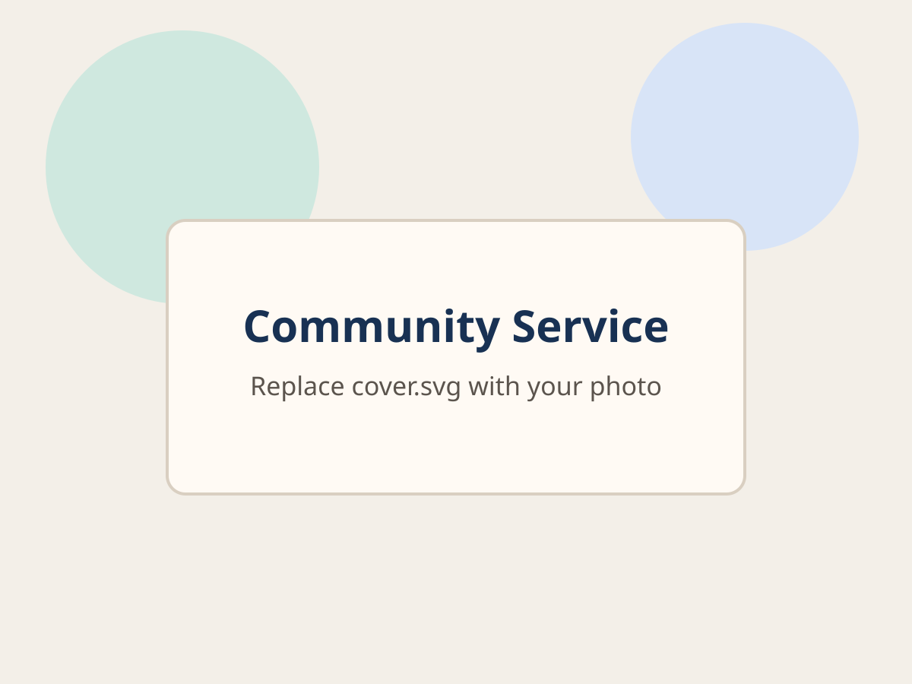
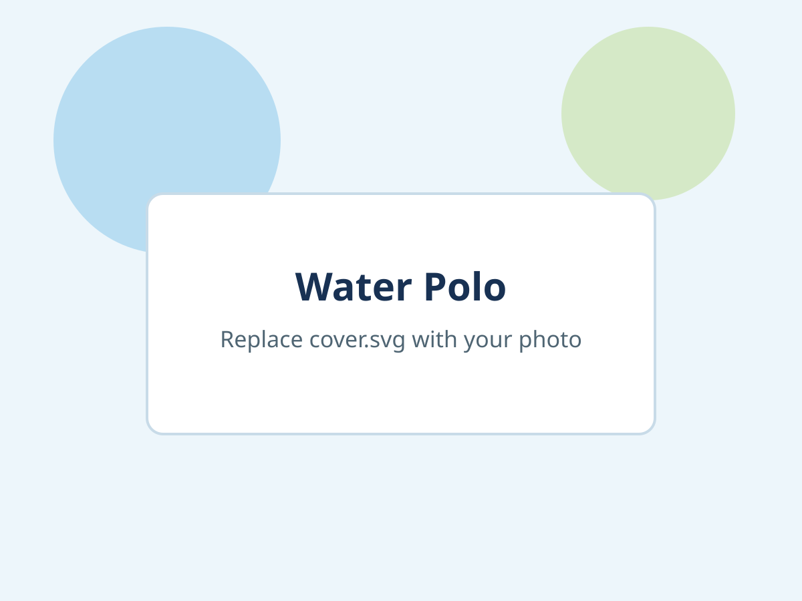
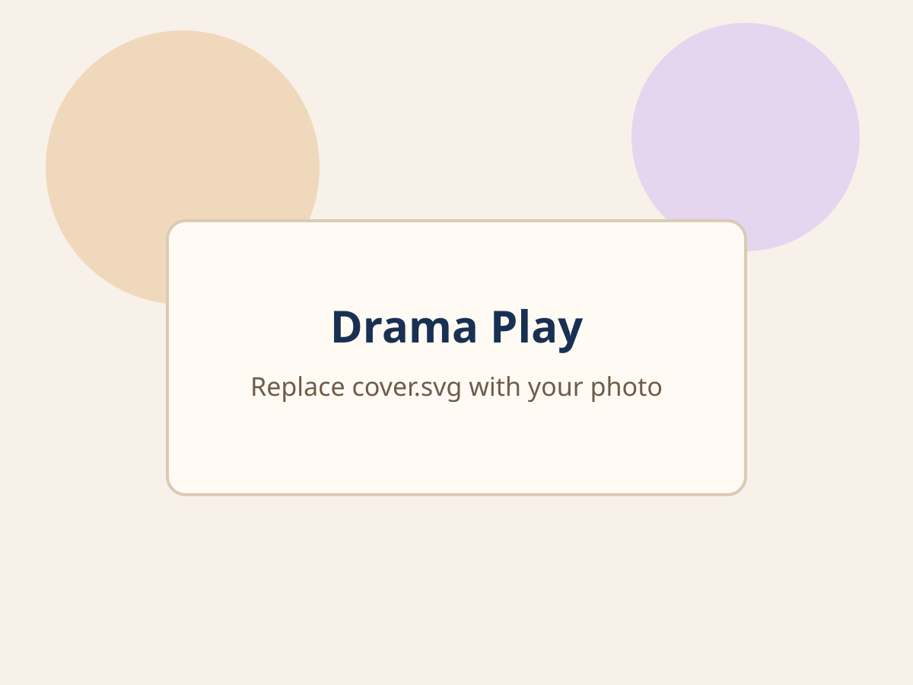

Community Service

Add photos from volunteer activities and outreach events.
Folder: fun-facts/community-service/
Drop photos into the folders below and replace the default preview files with your own pictures.

Add photos from volunteer activities and outreach events.
Folder: fun-facts/community-service/

Add team photos, tournament snapshots, and action shots.
Folder: fun-facts/water-polo/

Add rehearsal and stage photos from your performances.
Folder: fun-facts/drama-play/